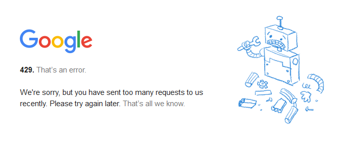
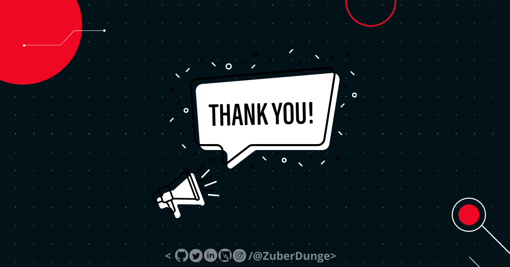

Here's what we'll go over in this article:
- What is a HTTP Status Code?
- Different Classes of HTTP Status Codes
- 1XX HTTP Status Codes
- 2XX HTTP Status Codes
- 3XX HTTP Status Codes
- 4XX HTTP Status Codes
- 5XX HTTP Status Codes
- Conclusion
So, What is a HTTP Status Code?
First, what is HTTP? HTTP stands for Hyper Text Transfer Proptocol.
Communication between client computers and web servers is done by sending HTTP Requests and receiving HTTP Responses.
So, whenever you go to a website o click on a link, your browser send a requestto the server to fetch the data of the website/URL you entered. The server processed the request and send back the required data.
Your browser receives a HTTP Status code every time you visit a website. Normally, those are not visible to you unless there's an ERROR.
If everything is working properly you won't see status code on your screen but if there's a problem, the server send an Error Message with a HTTP Status Code so that you can see what's wrong.
Check out the below image of Error Code 429 (Don't worry we'll see more about it in next section :)

Different Classes of HTTP Status Codes
HTTP Status Codes are divided into 5 Groups called as Classes, and the classes are :
- 1XX - Informational
- 2XX - Success
- 3XX - Redirection
- 4XX - Client error
- 5XX - Server error
1XX - Informational Response
An informational response indicates that the request was received and understood. It indicate a provisional response. Before receiving a regular response the client computer receives one or more 1xx responses.
Here's the list of 1XX Responses :
-
100 - Continue : Only a part of the request has been received by the server, but as long as it has not been rejected, the client should continue with the request.
-
101 - Switching Protocols : The requester has asked the server to switch protocols and the server has agreed to do so.
-
102 - Processing (WebDAV) : 102 indicates that the server has received the request and is processing, but no response is available yet.
-
103 - Early Hints : Used to return some response headers before final HTTP message.
2XX - Successful Response
This class of status codes indicates the action requested by the client was received, understood, and accepted.This is the best kind of HTTP status code to receive. A 2XX-level response means that everything is working exactly as it should.
Here's the list of 2XX Responses :
-
200 - OK : This is the code that is delivered when a web page or resource acts exactly the way it’s expected to.
-
201 - Created : The request has been fulfilled, resulting in the creation of a new resource.
-
202 - Accepted : 102 indicates that the server has received the request and is processing, but no response is available yet.
-
203 - Non-Authoritative Information : This status code may appear when a proxy is in use. It means that the proxy server received a 200 “Everything is OK” status code from the origin server, but has modified the response before passing it on to your browser.
-
204 - No Content : A status code and a header are given in the response, but there is no entity-body in the reply.
-
205 - Reset Content : The browser should clear the form used for this transaction for additional input.
-
206 - Partial Content : The server is returning partial data of the size requested. Used in response to a request specifying a Range header. The server must specify the range included in the response with the Content-Range header.
-
207 Multi-Status (WebDAV; RFC 4918) : The message body that follows is by default an XML message and can contain a number of separate response codes, depending on how many sub-requests were made.
-
208 Already Reported (WebDAV; RFC 5842) : The members of a DAV binding have already been enumerated in a preceding part of the (multistatus) response, and are not being included again.
-
226 IM Used (RFC 3229) : The server has fulfilled a request for the resource, and the response is a representation of the result of one or more instance-manipulations applied to the current instance.
3XX - Redirection Messages :
Redirection is the process used to communicate that a resource has been moved to a new location. 3XX HTTP status codes indicate that the client browser must take more action to fulfill the request. For example, the client browser may have to request a different page on the server. Or, the client browser may have to repeat the request by using a proxy server.
Here's the list of 3XX Responses :
-
300 - Multiple Choices : A link list. The user can select a link and go to that location. Maximum five addresses .
-
301 - Moved Permanently : The requested resource has been moved permanently. (This code is delivered when a web page or resource has been permanently replaced with a different resource.)
-
302 - Found : The requested page has moved temporarily to a new url .
-
303 - See Other : The server sent this response to direct the client to get the requested resource at another URI with a GET request.
-
304 - Not Modified : “The requested resource has not been modified since the last time you accessed it.” This code tells the browser that the resources stored in the browser cache haven’t changed. It’s used to speed up web page delivery by reusing previously-downloaded resources.
-
305 - Use Proxy : The requested URL must be accessed through the proxy mentioned in the Location header.
-
306 - Unused : This response code is no longer used; it is just reserved. It was used in a previous version of the HTTP/1.1 specification.
-
307 - Temporary Redirect : This status code has replaced 302 “Found” as the appropriate action when a resource has been temporarily moved to a different URL. Unlike the 302 status code, it does not allow the HTTP method to change.
-
308 - Permanent Redirect : The request and all future requests should be repeated using another URI. 307 and 308 parallel the behaviors of 302 and 301, but do not allow the HTTP method to change. So, for example, submitting a form to a permanently redirected resource may continue smoothly.
4XX - Client Error :
At the 4XX level, HTTP status codes start to become problematic. These are error codes specifying that there’s a fault with your browser and/or request.
Here's the list of 4XX Responses :
-
400 - Bad Request : The server did not understand the request.
-
401 - Unauthorized : Although the HTTP standard specifies "unauthorized", semantically this response means "unauthenticated". That is, the client must authenticate itself to get the requested response.
-
402 - Payment Required : Originally, this code was created for use as part of a digital cash system. However, that plan never followed through. Instead, it’s used by a variety of platforms to indicate that a request cannot be fulfilled, usually due to a lack of required funds. Common instances include: 1. You’ve reached your daily request limit to the Google Developers API. 2. You haven’t paid your Shopify fees and your store has been temporarily deactivated. 3. Your payment via Stripe has failed, or Stripe is trying to prevent a fraudulent payment.
-
403 - Forbidden : The client does not have access rights to the content; that is, it is unauthorized, so the server is refusing to give the requested resource. Unlike 401, the client's identity is known to the server.
-
404 - Not Found : The server can not find the requested resource. In the browser, this means the URL is not recognized. In an API, this can also mean that the endpoint is valid but the resource itself does not exist. Servers may also send this response instead of 403 to hide the existence of a resource from an unauthorized client. This response code is the most famous one due to its frequent occurrence on the web.
-
405 - Method Not Allowed : his is generated when the hosting server (origin server) supports the method received, but the target resource doesn’t.
-
406 - Not Acceptable : This response is sent when the web server, after performing server-driven content negotiation, doesn't find any content that conforms to the criteria given by the user agent.
-
407 - Proxy Authentication Required : A proxy server is in use and requires your browser to authenticate itself before continuing.
-
408 - Request Timeout : The client did not produce a request within the time that the server was prepared to wait. The client MAY repeat the request without modifications at any later time.
-
409 - Conflict : The request could not be completed due to a conflict with the current state of the target resource. This code is used in situations where the user might be able to resolve the conflict and resubmit the request.
-
410 - Gone : The target resource is no longer available at the origin server and that this condition is likely to be permanent.
-
411 - Length Required : Server rejected the request because the Content-Length header field is not defined and the server requires it.
-
412 - Precondition Failed : Your browser included certain conditions in its request headers, and the server did not meet those specifications.
-
413 - Payload Too Large : Request entity is larger than limits defined by server; the server might close the connection or return an Retry-After header field.
-
414 - URI Too Long : This is usually the result of a GET request that has been encoded as a query string that is too large for the server to process.
-
415 - Unsupported Media Type : The media format of the requested data is not supported by the server, so the server is rejecting the request.
-
416 - Range Not Satisfiable : Your request was for a portion of a resource that the server is unable to return.
-
417 - Expectation Failed : This response code means the expectation indicated by the Expect request header field can't be met by the server
-
418 - I’m a teapot : Any attempt to brew coffee with a teapot should result in the error code "418 I'm a teapot". The resulting entity body MAY be short and stout. (It’s also an April Fool’s Joke from 1998.)
-
422 - Unprocessable Entity : The client request contains semantic errors, and the server can’t process it.
-
425 - To Early : This response code means that the server is not willing to risk processing a request that might be replayed.
-
426 - Upgrade Required : Due to the contents of the request’s upgrade header field, the client should switch to a different protocol.
-
428 - Precondition Required : This response code means that the origin server requires the request to be conditional.
-
429 - To many Requests : This is generated by the server when the user has sent too many requests in a given amount of time (rate-limiting). This can sometimes occur due to bots or scripts attempting to access your site.
-
431 - Request Header Fields Too Large : This response code means that the server is not willing to process the request because its header fields are indeed too large, however, the request may be submitted again once the size of the request header fields is reduced.
-
451 - Unavailable For Legal Reasons : The user-agent requested a resource that cannot legally be provided, such as a web page censored by a government.
-
499 - Client closed request : This is returned by NGINX when the client closes the request while Nginx is still processing it.
5XX - Server Error Responses :
A 5xx Server error status code means that while the request appears to be valid, the server could not complete the request. If you're experiencing 5xx server errors for your website, you should immediately look at your server. If you're hosting your own server you'll need to start debugging to figure out why it is not responding properly. If you're using an external hosting provider you'll need to reach out to them, so they can look at it.
Here's the list of 5XX Responses :
-
500 - Internal Server Error : The server encountered an unexpected condition that prevented it from fulfilling the request.
-
501 - Not Implemented : The server does not support the functionality required to fulfill the request.
-
502 - Bad Gateway : This error response means that the server, while working as a gateway to get a response needed to handle the request, got an invalid response.
-
503 - Service Unavailable : The Service Unavailable response code means that the server is currently not ready to handle the request. This is a common occurrence when the server is down for maintenance or is overloaded.
-
504 - Gateway Timeout : The server, while acting as a gateway or proxy, did not receive a timely response from an upstream server it needed to access in order to complete the request.
-
505 - HTTP Version Not Supported : The server doesn’t support the HTTP version the client used to make the request.
-
507 - Insufficient Storage (WebDAV) : The method could not be performed on the resource because the server is unable to store the representation needed to successfully complete the request.
-
508 - Loop Detected (WebDAV) : The server detected an infinite loop while processing the request.
-
510 - Not Extended : Further extensions to the request are required for the server to fulfill it.
-
511 - Network Authentication Required : This response code means that the client needs to authenticate to gain network access.
-
599 -Network Connect Timeout Error : This status code is not specified in any RFCs, but is used by some HTTP proxies to signal a network connect timeout behind the proxy to a client in front of the proxy.
Conclusion
In this blog, we’ve learned about 40+ HTTP status codes that you may get. From the 1XX- and 2XX-level codes to the trickier 4XX- and 5XX-level errors.
I hope you folks now have some knowledge about the HTTP Status Codes, While they may seem confusing or intimidating on the surface, HTTP status codes are actually very informative. By learning some of the common ones, you can troubleshoot problems on your site quickly.

Thank You for giving your valuable time to read it, Have A Noice Day 💕
TweetAlso, If you Liked it, Don't forget to Like, Comment & share <3